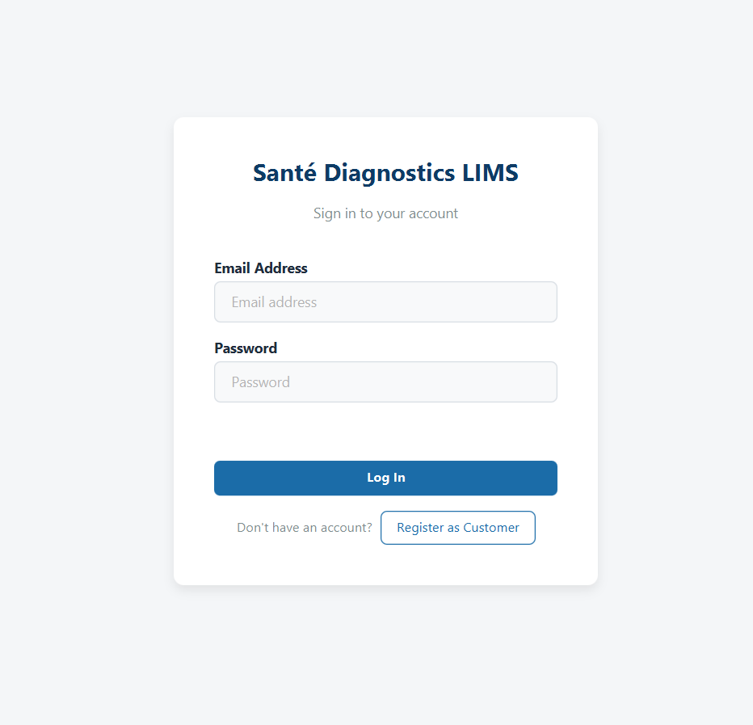
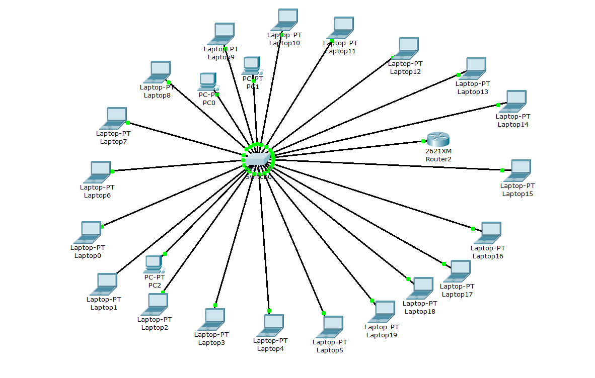
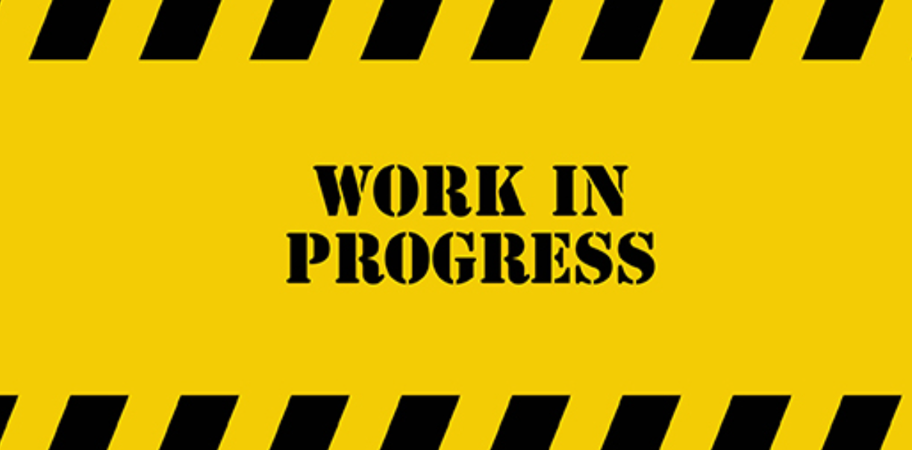

Who I am
I'm Adeniji Adedola Oluwatamilore, but everyone calls me Tami. I'm a final-year Computer Science student at Pan-Atlantic University with strong results in networking, security, systems and data-related courses.
Available for internships & junior roles
Final-year Computer Science student at Pan-Atlantic University. I write Java applications, design databases, and configure Cisco networks, and I'm currently building a tool that audits router security.
I'm Adeniji Adedola Oluwatamilore, but everyone calls me Tami. I'm a final-year Computer Science student at Pan-Atlantic University with strong results in networking, security, systems and data-related courses.
I build desktop applications in Java and JavaFX backed by PostgreSQL, design and configure multi-router networks in Cisco Packet Tracer, and use Git and GitHub to work with teams.
Network security. My final year project parses Cisco router and switch configs and flags risky ACL rules. I also enjoy formal specification (Z and VDM-SL) because it forces you to think clearly before you code.
Each tag is one port on the patch panel. Add yours by copying a line.

Project 02
A Laboratory Information Management System built as a team. I set up the project architecture, models, DAOs, services, login flow and the GitHub workflow.

Project 03
A Packet Tracer network joining seven university departments across two networks, using OSPF Area 0 and EIGRP AS 100 with DHCP, ACLs and Telnet access.

Project 04 · In progress
Reads Cisco router and switch config files and flags risky ACL rules, based on NIST SP 800-41 and other published best practice.
Add a new one by copying a whole <li> block below. Newest first.
Completed a remote SIWES internship covering five courses and wrote the internship report.
Presented and defended a two-network Packet Tracer design in class.
Built the foundation others coded on and merged teammates' work for the final submission.